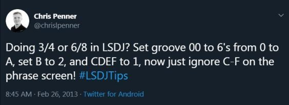

**Intense Tech with Defense Mech -- Groovy Groove and Tick Tricks Part 2!**
- Posted May 21st, 2019 by [DEFENSE
MECHANISM](https://defensemech.com "Posts by DEFENSE MECHANISM") *Note: [traducción al Español por Pixel Guy encontrado aquí.](un-groove-grooveante-y-trucos-para-los-ticks-parte-dos.html)*
Welcome back to Intense Tech! This time we'll be
continuing our exploration of grooves. After you read this lesson you
should have a few more tricks up your sleeve to make your tunes groove
even harder!
------------------------------------------------------------------------
Setting a groove of 2 ticks, 3 ticks, or more can be useful in a table
when creating arpeggios or duty cycle changes. This will result in the
table running more slowly than the default. Groove commands can also be
combined with Hop commands to create complex timing changes in both
phrases and tables.
In this example from the tune [Zenarchy by
Hypnogram](https://smokingmirrors.bandcamp.com/album/eye), you can see
the effect of combining Hop and Groove commands. Remember that the first
digit of H commands specifies the number of times to hop and the second
digit specifies where to hop to, and also that each Groove command is
set to the number of ticks that each line will last for.

Another trick, which I learned from Zef, is that you can actually use
grooves to write in other time signatures such as 3/4 without using a
Hop command!
[](https://twitter.com/chrislpenner/status/306414658603077633)
This is just one way to set a groove in 3/4; of course there are many
options. Let's take a look at an example of how it might be used:

Similarly, you can use grooves to express triplets. Using the default
`6/6` groove is helpful because 6 is divisible by both 2 and 3, so this
allows us to easily put 3 notes (an eighth-note triplet) in the span of
2 eighth notes. Since 2 eighth notes equal 24 ticks, we need to divide
24 by 3, which is 8. This means that each note of an eighth-note triplet
will last for 8 ticks. Using the groove numbering system that matches
the groove number to the number of ticks, we can place a `G08` command so
we know that each line will last 8 ticks. Since this is 2 ticks per note
more than the default groove of 6, we will need to compensate for the
extra ticks by subtracting the total number of extra ticks at the end of
the phrase either by using another G command, or an H command to hop to
the next phrase. In this example, we use 3 notes, so we need to subtract
6 ticks from the end of the phrase to allow the next phrase to start on
beat 1. This is easy to do by placing an `H00` command to skip the last
line of the phrase (which lasts 6 ticks).

Lastly, to wrap up the tips for this time, we have another example from
Hypnogram for a simple yet effective 2-channel delay. By using 2
grooves, you can easily offset the pulse channels so that one echoes the
other with one groove command, and then reset the delay afterwards by
using the second groove command. Setting the first line of the second
pulse channel to last 10 ticks (`0A` in hex) in the first groove means
that each subsequent note will be delayed by 4 ticks. In the next
phrase, we revert to groove 0 so each line lasts 6 ticks, but the 4-tick
delay is maintained. We reset this at the end of the second groove by
making the last line only 2 ticks long. In this example, I've also added
some finetune to the pulses to help thicken the sound a bit. First,
you'll hear one pulse by itself, then you'll hear the second pulse added
with delay.

------------------------------------------
I hope you enjoyed this tour through grooves and ticks! Thanks to all my patrons for their
support. If you'd like to offer support, please consider [joining me on
Patreon](https://patreon.com/defensem3ch). It means a lot and it helps me continue to make and host this
content, pay for translations, and get your input on what kinds of articles to write next!


Thanks again for reading, and until next time, this is [DEFENSE MECHANISM](https://defensemech.com),
signing off!
-----------------------------------------
Previous: [ <-- Groove Tricks Part 1 ](06-groovy-groove-and-tick-tricks-part-1.md.html) Next: [ DOTCNT's Wave Cruncher --> ](08-dotcnts-lsdj-wave-cruncher.md.html)
-----------------------------------------